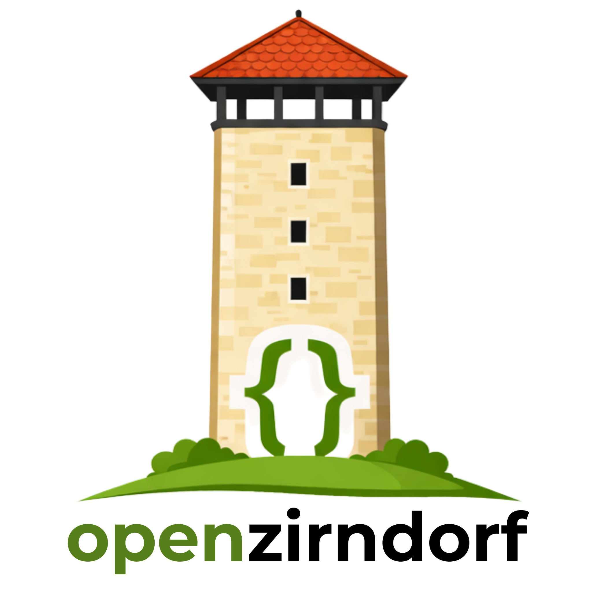
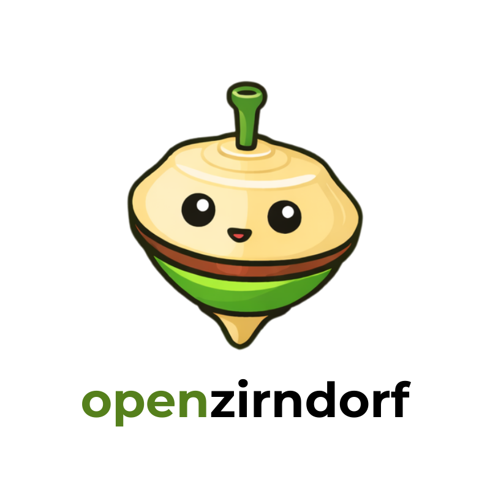
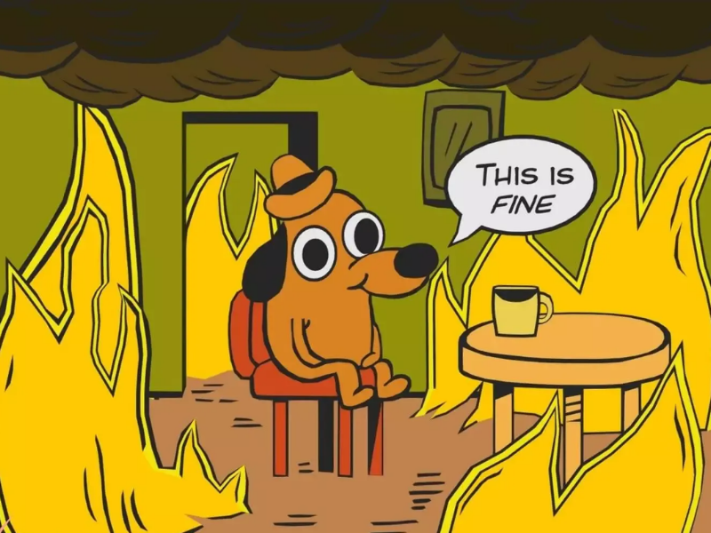
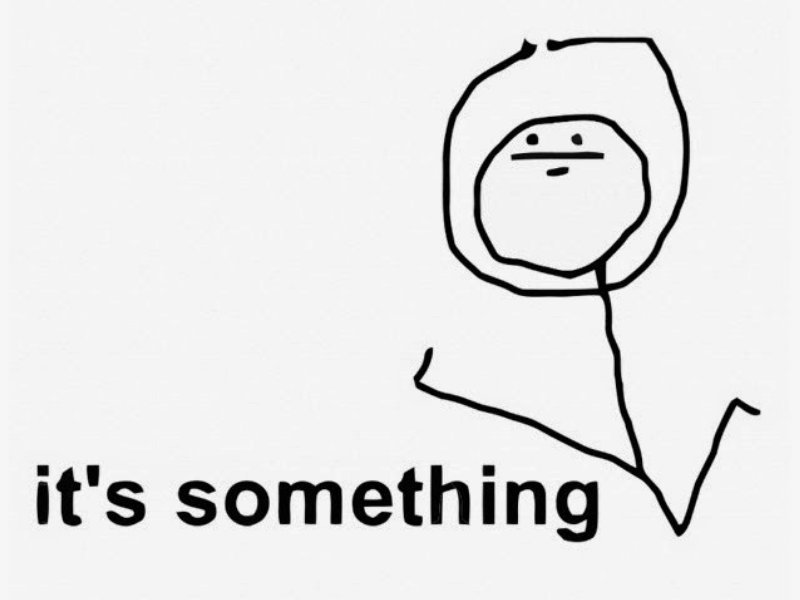
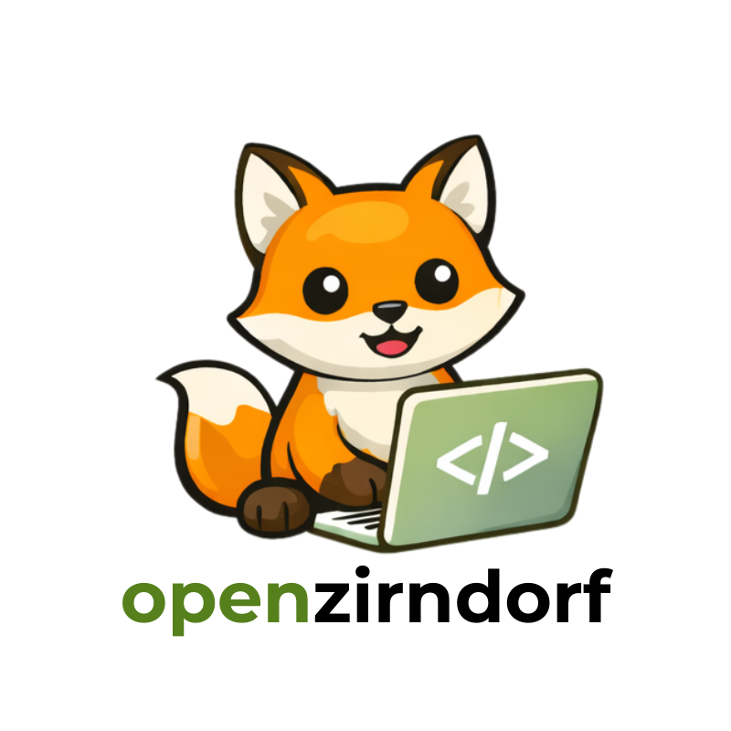
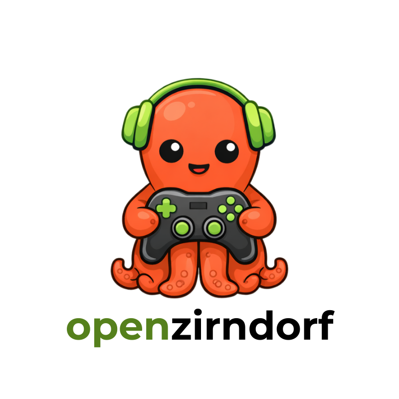
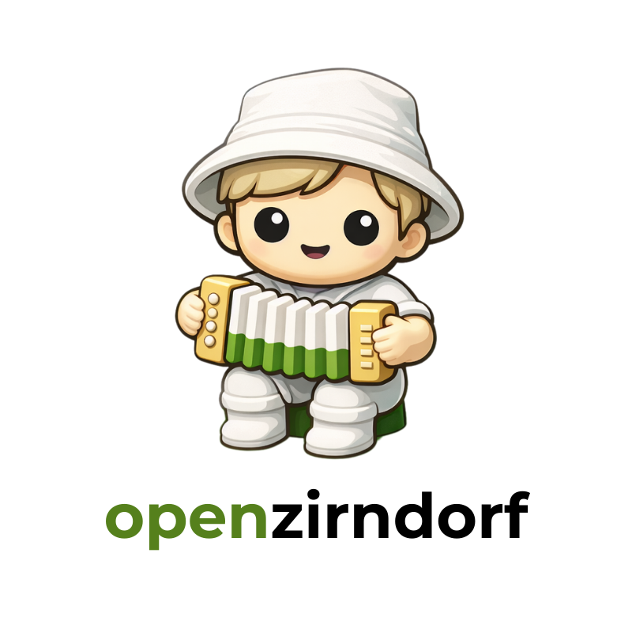
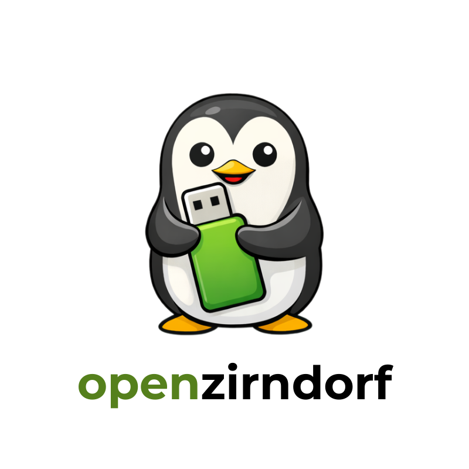

OpenZirndorf
Zirndorf digitaler, offener, transparenter.
Hotel Knorz · 19:30 Uhr
Tools für Bürgerinnen & Bürger

Wir bauen Tools für Bürgerinnen und Bürger.
So wird Zirndorf transparenter, digitaler, offener — und das stärkt die Demokratie.

5 Antworten · 1 informelle Unterstützung
github.com/openzirndorf
📸 Instagram 36 Follower · 1.693 Aufrufe · 303 Reichweite
Erste Idee: Garagenflohmarkt

Code ist nicht das Einzige, was zählt. Es gibt mehr als genug Rollen — auch für alle, die nichts mit IT am Hut haben.
Web, Apps, Automatisierung, jede Sprache willkommen
Damit unsere Tools nicht nur funktionieren, sondern auch Spaß machen
Social Media, Pressemitteilungen, verständliche Erklärungen
Kontakte in Verwaltung, Vereinen und Schulen
Einfach ausprobieren und sagen, was nervt
Ab und zu mitdenken, mitreden und mitmachen reicht
Treffen planen, Bürger einladen, Veranstaltungen koordinieren
Reihum — ca. 2 Minuten pro Person:
Schon dabei:




… und wer kommt heute noch dazu?
- Engagierte Zirndorfer mit Ideen & Fachkenntnissen
- Partner der Verwaltung — kein Ersatz, kein Gegner
- Überparteilich — Stadtleben geht alle an
- Offen für alle, die Demokratie digital stärken wollen
- Ehrenamt, das etwas Sichtbares hinterlässt
- keine städtische IT
- keine bezahlten IT-Consultant
- fertig, denn wir fangen gerade erst an.
brauchen wir eine formale Struktur wie einen Verein? Oder bleiben wir so lange wie möglich locker organisiert? was denkt ihr?
Mögliche Projektfelder:
Offenes Abstimmverhalten sichtbar · visuelle Aufbereitung von Stadtratsentscheidungen · offene Ratsprotokolle
Bürger-App · Veranstaltungskalender · Garagenflohmarkt · Nachbarschaftshilfe
Daten verständlich aufbereiten · Schulungen zu Internet & KI · Sensibilisierung für digitale Themen
So bleiben wir in Kontakt
Heute noch klären
Danke, dass ihr dabei seid.
Zirndorf,
wir fangen an.
Was heute Abend hier entsteht, entscheidet,
was OpenZirndorf werden kann.
openzirndorf.de